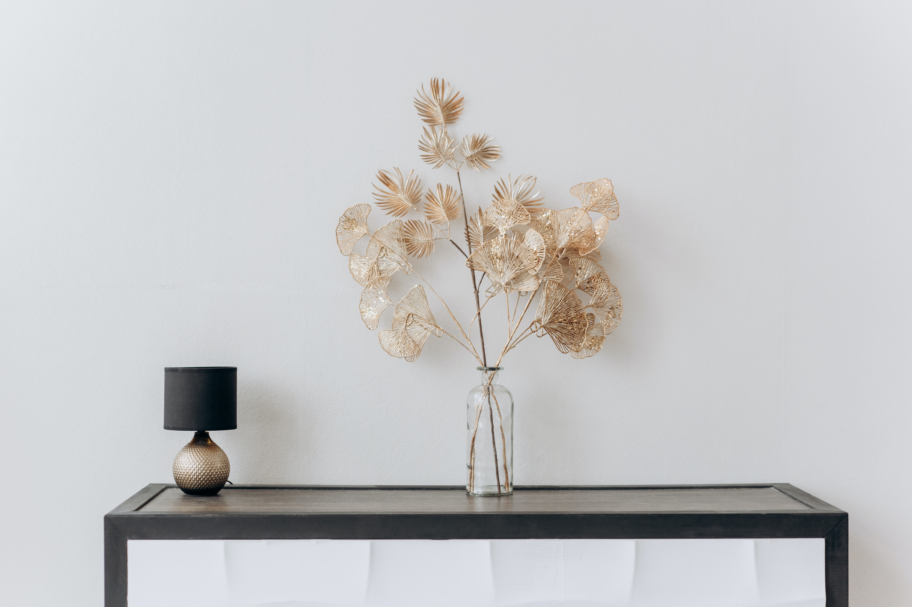

21 July, 2019 | 3 comments
Finding Simplicity in Life
Life can get complicated very easily but it doesn't have to be! There are many ways to simplify your life, a few of which we've explored in the past. This week we are taking a bit of and approach though, in how you can find simplicity in life you are already Living.
CONTINUE READING